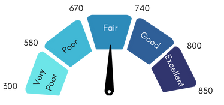
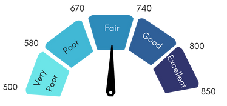

View on GitHub
View on GitHub
Introduction
 

Credit scores are pivotal in today’s financial landscape, influencing everything from rental eligibility to access to health insurance, yet the formula for calculating creditworthiness has long been shrouded in mystery and often overlooks important nuances. Typically, the credit score is determined based on five factors: payment history, the amount owed, new credit, credit history, and credit mix. This structure can place individuals with limited credit history— especially young adults who are just starting out building their credits —at a compounded disadvantage, restricting their access to loans, credit cards, employment opportunities, and insurance. This report aims to address this unfairness by creating a more comprehensive measure of creditworthiness by incorporating detailed account transaction analysis into the equation. To achieve this, we will build a model that generates probability-based scores reflecting the likelihood of delinquency, leveraging detailed bank transaction data to provide a fairer and more transparent assessment of financial responsibility.

Methods
Data Collection and Preparation
We utilized a dataset from Prism Data, containing consumer financial transactions, account balances, and related attributes. As the dataset was preprocessed, minimal cleaning was needed. Our focus was on ensuring consistency, handling missing values, standardizing categorical variables, and optimizing time-series data for modeling.
Feature Engineering
We engineered features to capture financial behavior through transaction history, balance trends, spending patterns, and risk indicators. Our feature generation process included:
- Category Mapping: Transaction categories were standardized by mapping raw category IDs to human-readable names, ensuring consistency.
- Time Window Filtering: Transactions were analyzed across multiple time windows—14 days, 30 days, 3 months, 6 months, and 1 year—to capture short- and long-term trends.
- Aggregated Statistics:
- Transaction-Based Features: Transaction volume and frequency over different time windows.
- Balance-Based Features: Trends in cumulative balance changes.
- Category-Specific Features: Spending patterns in categories like groceries, entertainment, and bills.
- Outflow Features: Expense trends excluding self-transfers and ATM withdrawals.
- Balance Computation: Balance trends were tracked by merging transaction data with balance records, computing changes over time.
- Risk Indicators: High-risk behaviors were identified through flagged transactions, such as gambling, using threshold-based indicators.
Models
We evaluated multiple machine learning models to predict credit risk. Below is a brief description of each model used in our analysis.
Categorical Boosting (CatBoost)
CatBoost is a gradient boosting algorithm designed to handle categorical data efficiently. It utilizes ordered boosting and other optimizations to prevent overfitting and improve performance on structured datasets.
Histogram-based Gradient Boosting (HistGB)
HistGB is a variation of gradient boosting that uses histogram-based binning to speed up training and improve memory efficiency. It is particularly well-suited for large datasets and high-dimensional features.
Light Gradient Boosting Machine (LightGBM)
LightGBM is a gradient boosting framework that builds decision trees using a leaf-wise approach, allowing for faster training and reduced memory usage compared to traditional boosting methods.
Extreme Gradient Boosting (XGBoost)
XGBoost is a widely used gradient boosting algorithm known for its regularization techniques and parallel processing capabilities, making it effective for structured data tasks.
Logistic Regression
Logistic Regression is a simple yet effective linear model for binary classification. It models the probability of an event occurring based on input features and serves as our baseline model for comparison.
Results

Model Performance
The ROC curves below illustrate the trade-off between the true positive rate and the false positive rate for each model. The AUC scores indicate overall model performance, with higher values reflecting better predictive power.
Models Evaluated
- CatBoost (AUC = 0.76) – Achieved the highest AUC, making it the best-performing model.
- Histogram-based Gradient Boosting (HistGB) (AUC = 0.75) – Performed closely to CatBoost.
- LightGBM (AUC = 0.75) – Another strong performer with similar results to HistGB.
- XGBoost (AUC = 0.73) – Slightly lower performance but still competitive.
- Logistic Regression (AUC = 0.67) – Served as a baseline, showing lower predictive capability.
Key Insights
Gradient boosting models (CatBoost, HistGB, LightGBM) outperformed logistic regression, highlighting the effectiveness of tree-based ensemble methods in credit risk prediction. CatBoost achieved the highest AUC, suggesting its suitability for handling categorical data and complex interactions.
Conclusion
Our research demonstrates that integrating detailed bank transaction data into credit scoring models significantly enhances the accuracy of delinquency predictions. By moving beyond traditional credit scoring methods and focusing on comprehensive transactional histories, we can more precisely assess an individual's credit risk. This approach not only improves predictive performance but also offers a fairer and more transparent evaluation of creditworthiness, providing the opportunity to reduce reliance on conventional credit scoring systems.